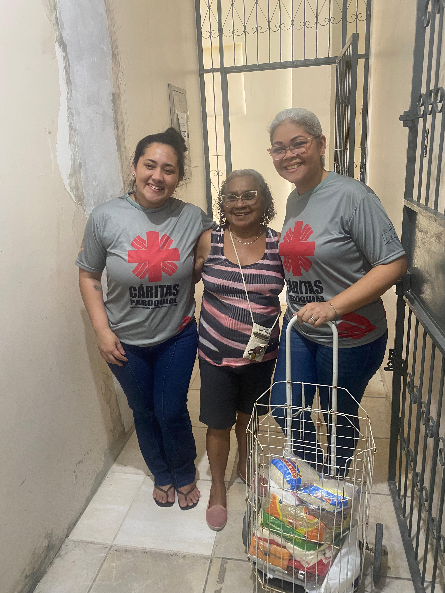
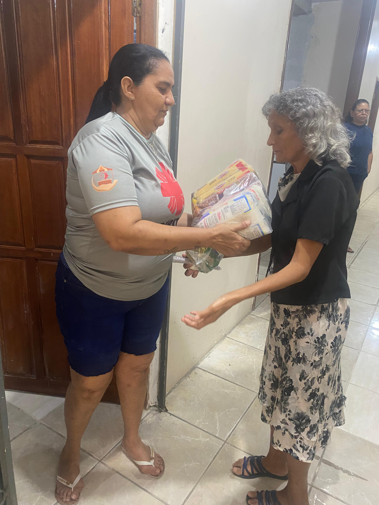
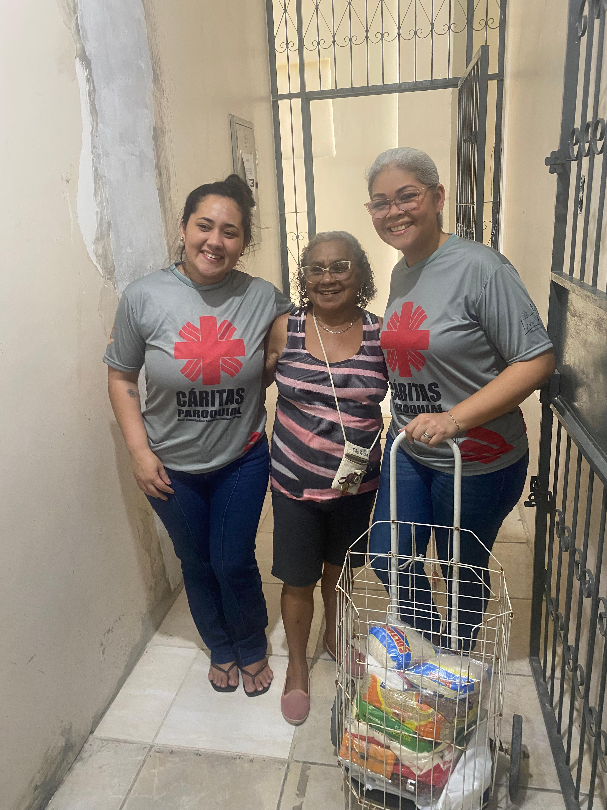
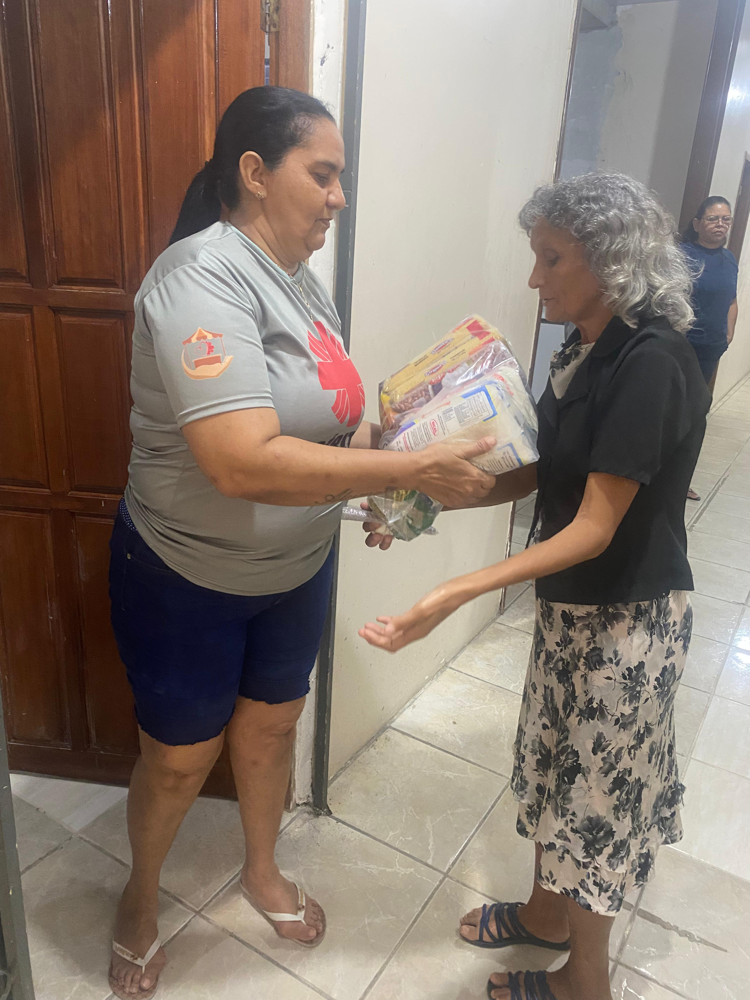

Eventos Passados
Relembre os momentos de solidariedade e transformação que vivemos juntos.
1º Feira Cáritas - Mão que Acolhem
A Cáritas Paroquial Sagrada Família realizou com sucesso a sua 1ª Feira "Mãos que Acolhem", um evento que transformou a noite em um vibrante ponto de encontro. Com barracas iluminadas e a comunidade reunida, a feira foi um testemunho da força da solidariedade e do acolhimento. Um espaço onde o apoio mútuo e a alegria de estar junto se fizeram presentes, reforçando os laços e o compromisso da Cáritas com a comunidade.
Doação das Cestas Básicas
A solidariedade se materializa em ações concretas que transformam vidas. Nossa ação do mês de Junho distribuiu cestas básicas graças à contínua mobilização de voluntários e ao apoio de doadores e das comunidades da área missionária sagrada família, conseguimos levar alimentos nutritivos e esperança diretamente às mesas das famílias cadastradas que mais precisam em nossa comunidade. Cada cesta é um gesto de amor que garante dignidade e segurança alimentar. Sua colaboração faz com que essa corrente do bem nunca pare.
 



Apa Móveis e Cáritas Sagrada Família: Unindo Forças Pela Solidariedade
A Cáritas Sagrada Família celebra e agradece a inestimável parceria com a Apa Móveis em mais uma significativa ação de solidariedade. Em um belo exemplo de responsabilidade social, a Apa Móveis uniu-se à nossa missão, contribuindo ativamente na distribuição de cestas básicas, mantas e redes para as famílias cadastradas e atendidas por nossa instituição.